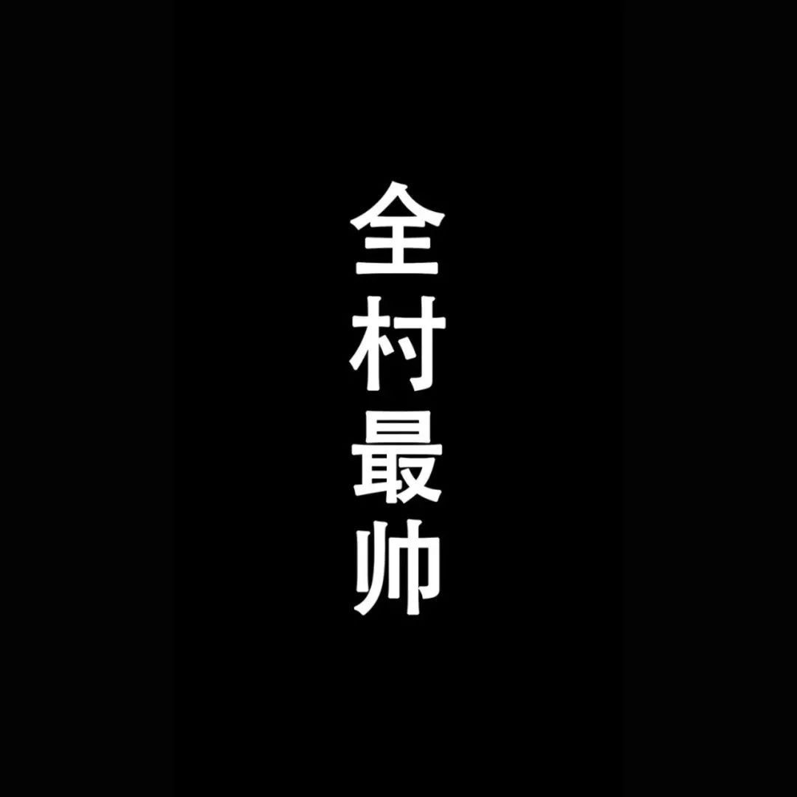

| 我一直希望在不断的的学习当中， 自己仍具有一项自己喜欢却又优秀的特长， 也可以说是爱好， 所以选择了篮球，一项我为之兴奋， 抛洒热情的运动。 进入大学后， 我很幸运的进入了学院的篮球队中， 从中接受了自己， 从来不曾接触的篮球。 一个拥有智慧， 需要团 结， 甚至关乎荣誉的集体运动， 我很幸运。大学就这样开始了，我的大学篮球故事就这样开始了 | ||
| 自以为非常刻苦的训练， 搞的我疲惫不堪， 甚至忽略了 学习。 当时的大家， 热血澎湃， 激情四射， 认为大学就要经 历一些值得共同回忆的事情， 篮球恰恰如此。 一起流汗， 一 起进步， 一起探讨， 甚至于受伤， 冲突， 也曾怀疑是否值得 如此付出。 荣誉， 多么遥远又如此期盼。 十几个人都在畅想， 当我们站在领奖台上时， 那一刻的我们多么幸福， 那一刻是 属于我们， 属于学院的荣耀。 没有一个人想要放弃， 难得有 了一个除了学习， 大家又共同奋斗， 一起追寻的目 标。 再苦， 再累， 也要坚持 |  | 比赛已经临近了， 训练的时间越来越多， 坐在一起讨论 的次数也越来越多， 总觉得时间不是很够， 又都在企盼比赛 开始， 证明我们自己的时刻。 确定十二人名单是个痛苦无比 的过程， 虽然我不是教练队长， 但我知道， 总有一些人需要 离开， 会被放手， 没办法， 这就是规则， 即使再不舍， 也只 能遵循了。 曾经一起奋斗， 一起为之努力的你们， 当我们争 取胜利， 获得荣誉的时候， 你们也能体会到， 那么灿烂， 那 么辉煌， 有你有我， 有大家每一个人。 我进入了 十二人名单 |
| 决赛来了！ 人山人海水泄不通，场上队员们在坚持， 在拼搏，在想方设法的得分。 场下， 我们在叫， 在吼， 一起在分析， 一直在寻找更好的机会去把握得分。 教练不断的在来回踱步， 在冲场上指挥， 我们在一起等待最后的时刻。 嘟！ 嘟！ 嘟！ 赢了！ 我们赢了！胜利来的如此不易， 疯狂了， 所有泪水浸含在眼眶里， 那一刻虽然我们不在场上， 但一样激动。 荣誉来临时， 微不足道的只是个人 篮球， 我深深爱着的运动， 曾经为之如痴如醉， 激情挥洒， 难以忘怀， 冠军， 十年之后的再次问鼎， 价值的呈现总是那么教人舒服。 从此， 我懂了， 无论在 哪儿， 集体的荣誉永远强大于个人的得失， 当你真正经历这一切， 爱着这一切时， 那么所谓的其他都会无所谓的。 感谢我的教练， 感谢我的队友， 感谢让我经历的计科篮球， 感谢那块儿奖牌， 让我成长， 令我辉煌！ | ||